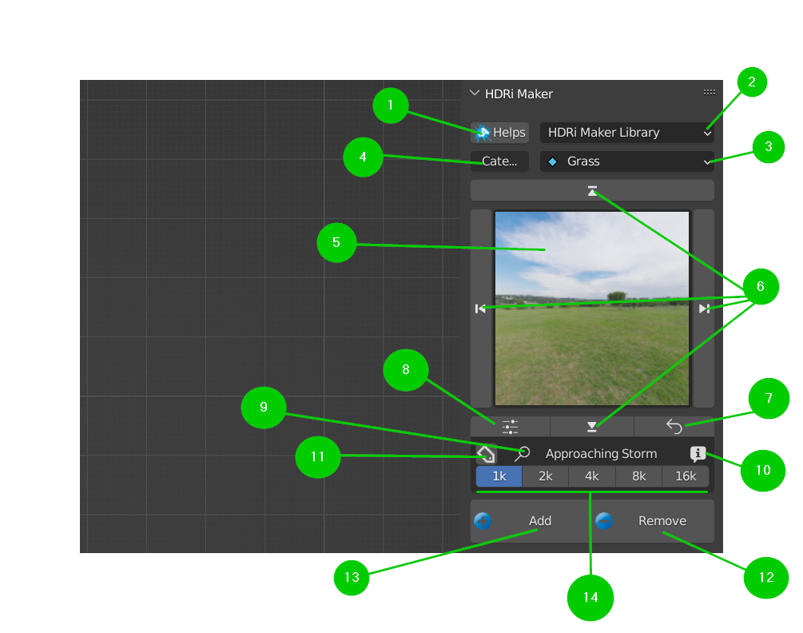

Main Panel (Library Manager)
Quick overview of the Main Panel:
{kind=link}
Help Button:
This is the tooltip for the Help button in the main panel
Library Selector (Drop-down menu):
This allows you to select the library (by default choose between Default Library and User Library)
Category Selector (Drop-down Menu):
This allows you to select the category (Each library will have its own category)
Search category by entering text
This allows you to search for a category by typing the name of the category
{kind=link}
Bakcground Selector (Icons Preview):
This allows you to select the background (Each library will have its own background), a pop-up window will appear with the list of preview backgrounds
UP-DOWN/LEFT-RIGHT Arrows:
Up/Down arrows allow you to scroll through the list of categories
Left/Right arrows allow you to scroll through the list of backgrounds (Into the selected category)
Force reload icons:
If the preview is not loaded correctly, this allows you to reload the preview
Options Button:
This button opens the Blender preferences window and goes directly to the “Options” section of HDRI Maker
Search Background by entering text
This allows you to search for a background by typing the name of the background (It work with the tag Restrictions if you need)
Material Info Button:
This button opens a menu with the information of the active material in the preview, you can see author / license / also modify the tags
Tag Search Button:
This button expands the menu where you can enter the tags to filter what to display in the preview and what not
{kind=link}
Remove Button:
This button removes the world background from the scene (Press Shift+Click to remove completely the world background)
Add Button:
This button adds the selected background to the scene, (Press Shift+Click to importing an external background image file)
Material Version Selctor:
If in the library there are different versions of the same material, this selection allows you to choose which version to load (Press Add to confirm)